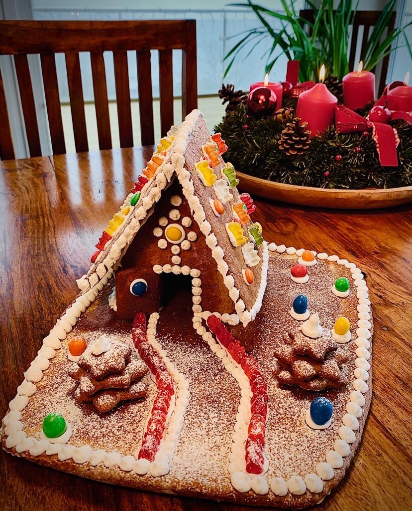

Lebkuchenhaus (Lara Schiemer)
Schwierigkeit:
Dauer:
Zutaten
Teig
-
500g Roggenmehl
-
400g Rohrzucker
-
4 Eier
-
3g Lebkuchengewürz
-
4 EL Honig
-
2 TL Natron
-
140g Butter
Glasur + Dekoration
-
200g Staubzucker
-
1 Eiweiß
-
Süßigkeiten
Zubereitung
Teig
1. Alle Zutaten etwa fünf Minuten kneten, bis sie gut vermischt sind.
2. Eine gute Stunde, wenn nicht sogar länger rasten lassen
3. Mehl auf die Arbeitsfläche streuen, und den auswalken (~5mm)
4. Hausteile ausschneiden (Dach, Seitenwände, Boden...) und mit Ober-/ Unterhitze bei 210°C ca. 5-7min backen
5. Kurz auskühlen lassen, und Rände abschneiden, sodass die seiten zusammenpassen
6. Die Glasur vorbeireiten und damit die Teile zusammenkleben
7. Nun kann man mit der restlichen Glasur das Haus verzieren und mit Süßigkeiten bekleben
Glasur
1. Staubstucker sieben und mit dem Eiweiß vermixen, bis es fest wird